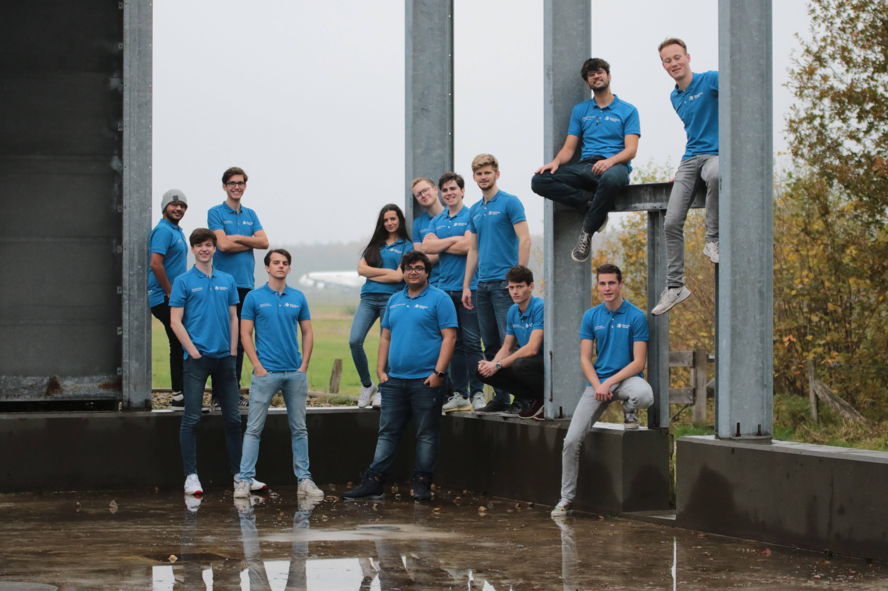

DroneTeam Twente
Innovating and accelerating the drone industry to make a positive impact
General introduction
DroneTeam Twente is the first and only competitive student drone team in the Netherlands, based at the University of Twente. DroneTeam Twente develops drones for humanitarian aid, which are able to deliver packages fully autonomous. Each year, a completely new drone is developed by a new group of students from the UT and Saxion. DroneTeam Twente competes annually in the IMechE UAS challenge in Wales, where the drone will perform a humanitarian rescue mission in a simulated disaster area.
Technical information
The drones of DroneTeam Twente are almost completely manufactured by 3D printing. Next to being a relatively inexpensive production method, it also increases their modularity; a broken piece can easily be replaced without throwing away too much material.
DroneTeam Twente focuses on the development of VTOL (‘vertical take-off and landing’) drones. These drones can take-off and land without the need for an airstrip, whose existence can not be relied upon in disaster areas. The drones are also equipped with fixed wings. By doing this, the drone can be aerodynamically optimized for horizontal flight, thereby reaching the desired location faster and more efficiently. This also increases the range of the drone.
Furthermore, the drone is equipped with a camera in order to map the disaster area. This information can be used to aid workers to better anticipate the situation. This camera is also connected to image recognition software, with which ground markers can be detected.

Side projects
Alongside developing the drone for the IMechE UAS challenge, the team has some side projects. One of them is DroneTeam Racing, in which FPV flight lessons are given using computer simulations. Another are the Dronobox workshops, where participants can build and fly a drone using a building kit made by DroneTeam.